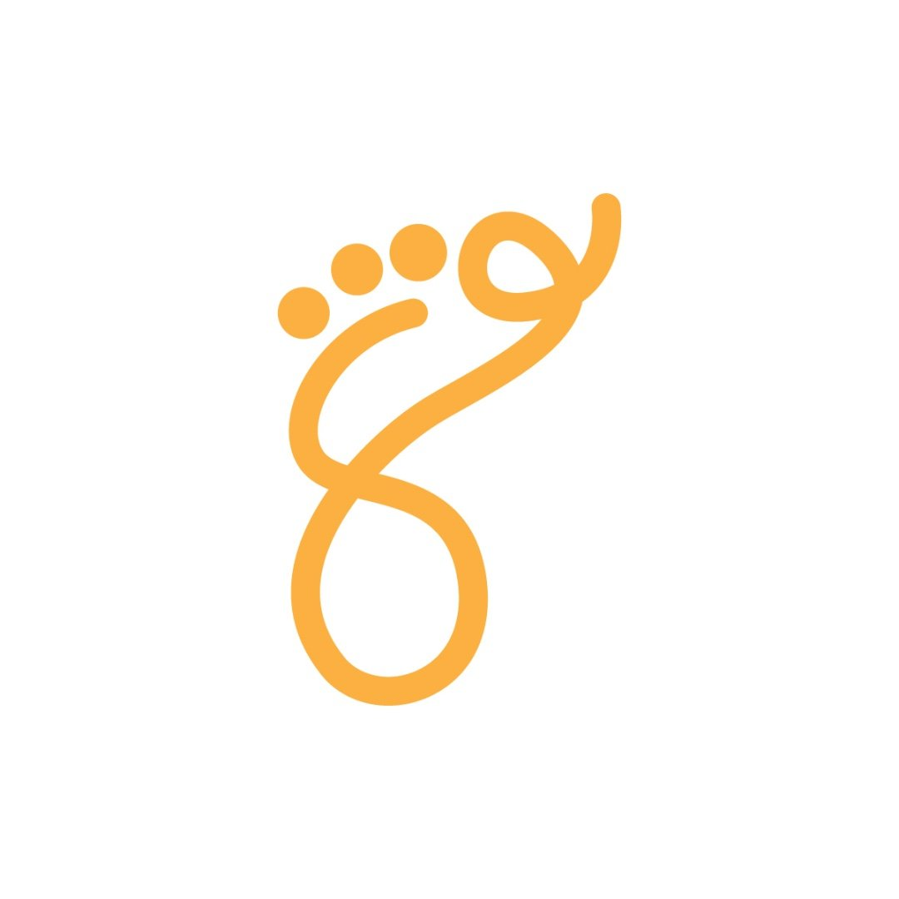

Journey WeaversBoth options use the Journey Weavers DNA — plum, saffron, the footprint mark, and the same considered voice. Where they differ is in rhythm, density, and emotional register. Click either to explore.
Our current direction. A boutique-magazine feel — strong grid, calm typography, imagery used as generous pause points.
Inspired by Made for Spain & Portugal. Large serif display, numbered editorial moments, scroll-driven image reveals, a deeper emotional pull.
Once you've lived with both, tell us which sections resonate. We can pull the cinematic hero onto the editorial layout, or swap the testimonial treatments — the best site is often a composite.